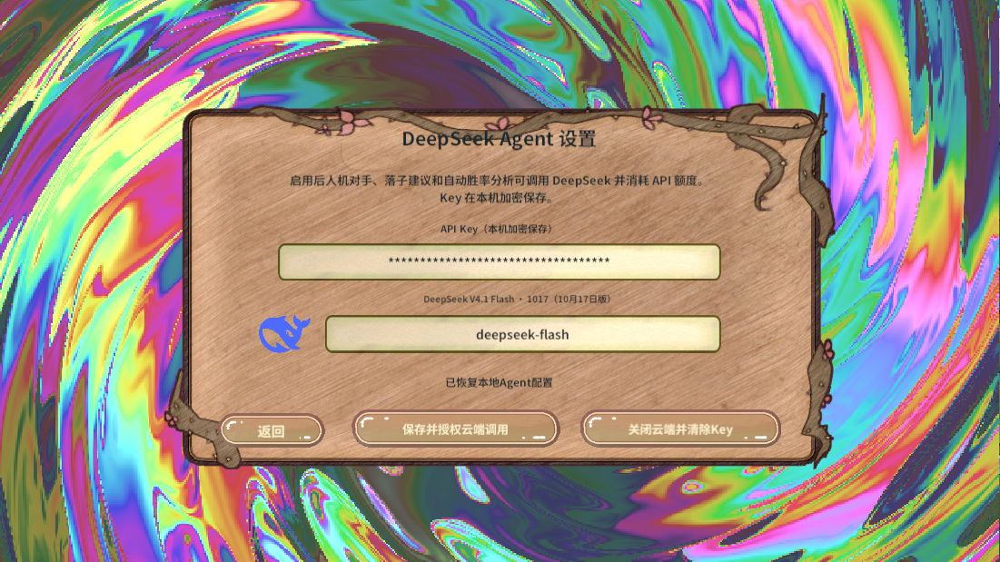
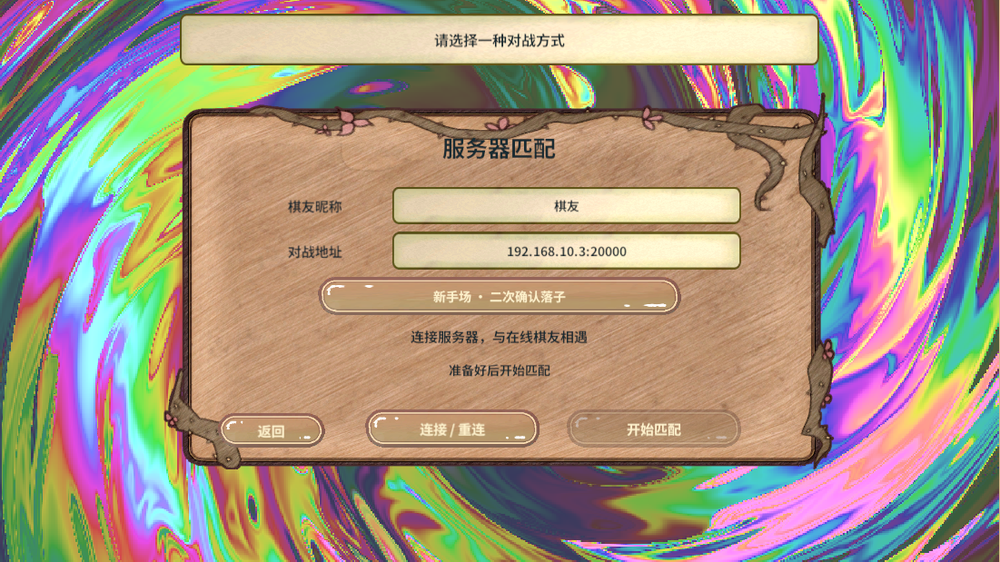
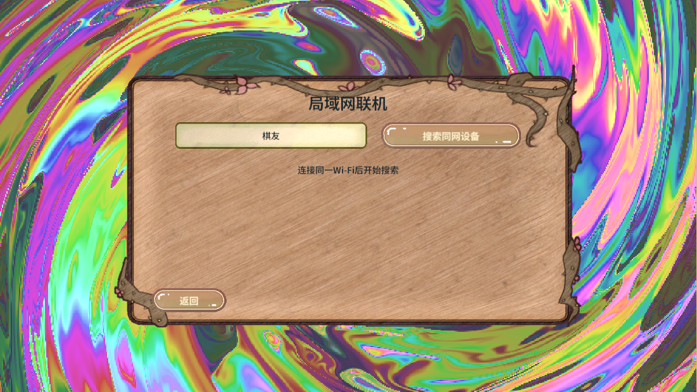
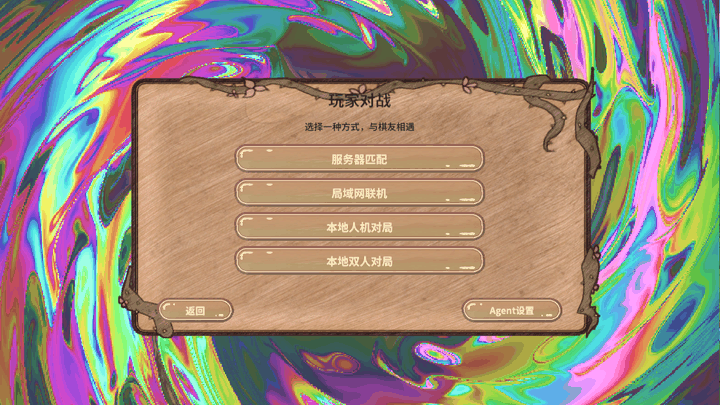

实际 PC AB 画面
对战入口
Agent设置
服务器匹配
局域网联机 
入口漩涡连续截图，逐帧有画面差异
制作、依赖与测试
- RevCLI 发现并执行
game.pvp.menus。四张 Prefab 读回同一材质引用和 0.672 × 0.672 的底板锚点跨度，根控件锚点都在板内。
- 字库校验 1,788 个字符通过，原字体与输出字体哈希匹配。PC 构建初次切平台时报告 Unity 资源重载错误，复建通过。PC 和 Android 各 82 包，发布内容逐文件核对 SHA256。依赖图唯一新增关系是
ui_pvp → material_background。
- RevMCP 发现真实 Play 与 UI 能力，从大厅
btnPvP 真实点击打开菜单。入口六个按钮均通过命中检查。测试进入 Agent、服务器和局域网页，检查返回按钮与截图，再回大厅并执行清理。
- 运行验证覆盖 Windows Editor 的 PC 真实 AB。服务器连接、局域网搜索、外部 Agent 请求与 Android 真机属于其它验收场景。